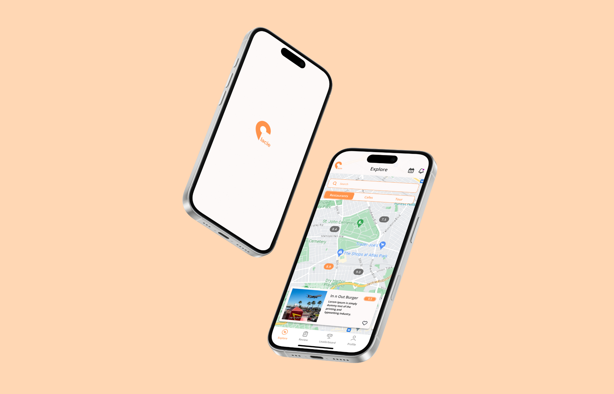
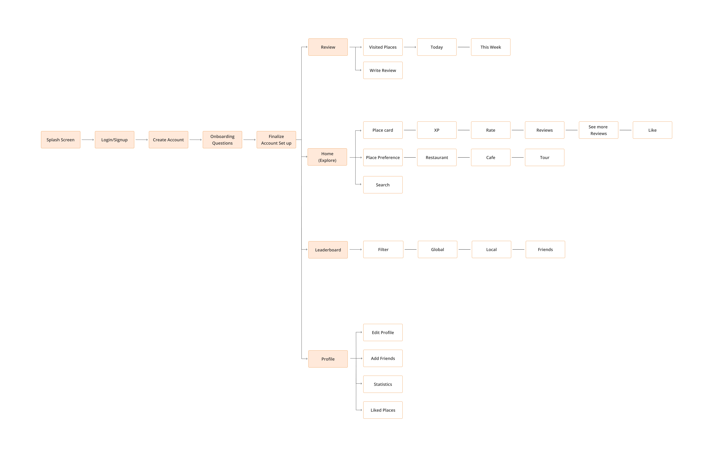
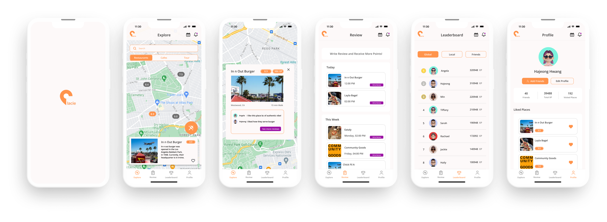

JORDAN
26 years old
Graphic Designer
Brooklyn, NY

Placie aims to create a connected environment for users to find and explore places they are interested in or likely to be interested in through a personalized places recommendation feature. It allows people to explore restaurants, cafes, and tourist attractions easily and effectively through gamified interfaces.
The current mobile app lacks a personalized recommendation feature. Currently, there is an app that recommends restaurants, cafes, and places to visit; however, these features are separate and do not integrate.
Directed interview (5 parts)
Number of Interviewees: 7
1. Users are high-technology savviness people who want high-quality, straightforward, and fun interfaces.
2. Users wanted a straightforward mobile app that has a personalized recommendation feature.
3. Users are familiar with finding places using community-oriented apps, such as Reddit, TikTok, and Instagram.
Save time buying and selling. Has used classifieds for years but feels current designs slow the process; wants a more efficient flow.
Wants a more efficient, user‑friendly experience that helps her find what she needs quickly while keeping transactions safe and trustworthy.

After conducting direct interviews, I documented and analyzed the responses to identify insights and key findings. Using affinity diagramming, I organized these insights, focusing on three insights that highlight the user's pain points.

How can a redesigned Duo Mobile app deliver a faster, more seamless verification experience?

During the usability test with 6 participants, 100% were able to complete the main goal flow, demonstrating overall task success. However, a minor system error occurred on the review submission pages, where users can write both public and private reviews, which caused 1 participant (17%) to experience confusion during goal completion.
Despite this, participants provided valuable qualitative feedback.
1. 4 out of 6 participants (67%) suggested having separate diary and review features to reduce cognitive load.
2. 2 participants (33%) expressed interest in a social sharing feature for their diary entries to enhance motivation.
3. 3 participants (50%) requested estimated ride times to better plan their visits.
Overall, participants highlighted Plaice’s clean interface and intuitive navigation (mentioned by 5 out of 6 participants, 83%), while also identifying opportunities for improvement in review-related interactions.
1. If I could collaborate with developers, I would incorporate algorithm into an app to enhance recommendation feature.
The Duo Mobile Re-design project gave me the opportunity to equip the skills needed to implement detailed interfaces and interactions using Figma.
Conducting surveys with users taught me the importance of empathizing with users and understanding their pain points before initiating ideation.